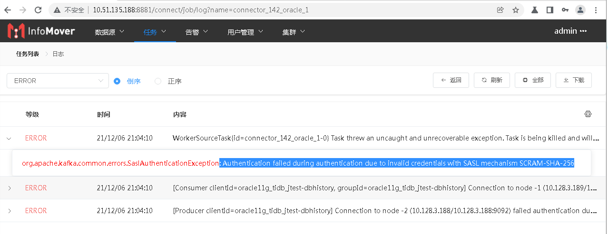
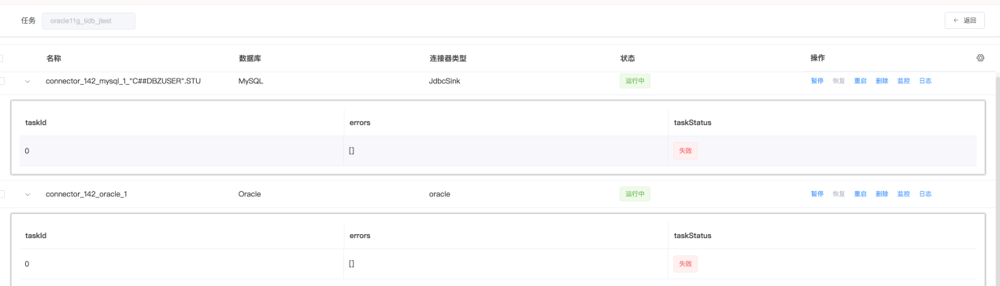
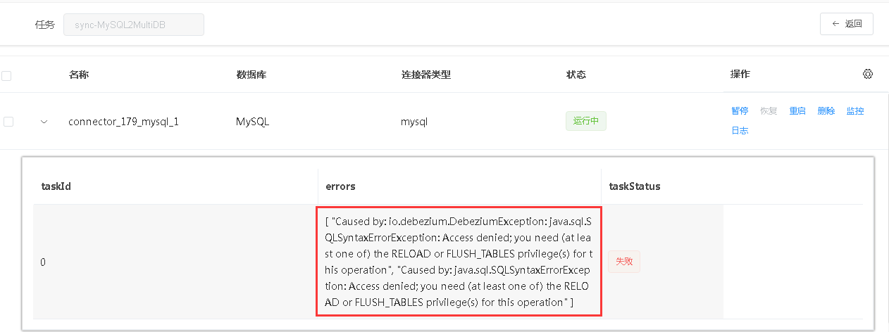
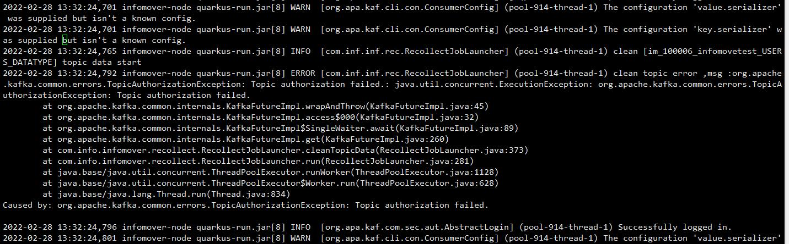

# 问题解决方案
# 配置类问题
# 数据同步任务
没有跑通, 也没有具体的报错（版本>=1.0已修复）
排查原因：
1. 集群配置：目前Connector和Kafka是有绑定关系的（鉴权失败的报错）；
2. 采集数据库的用户带有特殊字符，同步任务的Connector会存在问题（同步的connect没有日志信息）。

直接原因：特殊字符导致Kafka topic创建失败。
根本原因：创建Topic带有#的特殊字符，C##DBZUSER这个用户应该只具有连接的功能。
解决方式：建议不要使用带有特殊字符的schema，后续的版本中会提示11g不要使用这个用户的schema。
# MySQL8.0采集用户权限问题
you need (at least one of) the RELOAD or FLUSH_TABLES privilege(s) for this operation
日志报错Access denied;you need (at least one of) the RELOAD or FLUSH_TABLES privilege(s) for this operation;
原因：采集用户需要权限（从库开启数据采集也是同样的授权过程）；
解决方式：在数据库中执行授权语句（注意：报错提示需要RELOAD or FLUSH_TABLES权限，MySQL8.0才有FLUSH_TABLES权限，但是这里有RELOAD权限后可以不给FLUSH_TABLES权限）：
GRANT SELECT, RELOAD, SHOW DATABASES, REPLICATION SLAVE, REPLICATION CLIENT ON *.* TO 'dsg' IDENTIFIED BY 'password';

# MySQL同步至PostgreSQL/Oracle
connector报错：PK mode for table ‘tablename’ is RECORD_KEY with configured PK fields [xxx], but record key schema does not contain field: xxx
查看MySQL表的主键是否有大小写敏感，配置正确的主键即可。
show global variables like '%lower_case%';
+------------------------+-------+
| Variable_name | Value |
+------------------------+-------+
| lower_case_file_system | ON |
| lower_case_table_names | 0 |
+------------------------+-------+
# ClusterAuthorizationException
ClusterAuthorizationException: Cluster authorization failed.
报错信息包含: Cluster authorization failed.Creation of database history topic failed, please create the topic manually
原因分析：Kafka集群中用户权限不足，需要cluster相关权限。
解决方式：授权
bin/kafka-acls.sh --authorizer-properties zookeeper.connect=zookeeper:2181 --add --allow-principalUser:pocuser --cluster
# PG采集任务报错
ConnectException: Publication autocreation is disabled
报错信息包含:
ERROR org.apache.kafka.connect.errors.ConnectException: Publication autocreation is disabled, please create one and restart the connector
原因分析：PG采集时需要在源端数据库中创建Publication。
解决方式：Connector创建Publication可由参数“发布自动创建模式”控制，由Connector任务自行创建需要CREATE授权（GRANT CREATE ON DATABASE pgdb TO dbz4coll;）并将该参数设为“all_tables”或“filtered”，任务发布者在发布任务前或任务失败后可在源端数据库中创建Publication，名称需与“出版物”参数值（默认为dbz_publication）一致；
参考发布目标表：
| -- -- 方式一：创建包含所有表的发布（发布方式二选一，名称与dbz参数publication.name的值一致） CREATE PUBLICATION dbz_publication FOR ALL TABLES; -- -- 方式二：发布指定表 CREATE PUBLICATION dbz_publication; ALTER PUBLICATION dbz_publication ADD TABLE all_datatype; |
|---|
# 任务运行过程问题
# DebeziumException
The db history topic is missing. You may attempt to recover it by reconfiguring the connector to SCHEMA_ONLY_RECOVERY
可能出现这种问题的场景：
- Connector重启，Kafka Topic: history schema命名发生改变；
- 采集的表删除重建/表结构变更；
解决方式：
- 将快照模式改为“SCHEMA_ONLY_RECOVERY”，刷新配置；
- 使用“重新采集”功能。
# 任务重新采集报错
TopicAuthorizationException
重新采集时出现以下报错：

原因分析：重新采集功能使用时，topic数据需要通过DeleteRecords的API进行offset重置，因此需要授权topic资源的Delete操作权限。
解决方式：授权Topic资源的Delete操作权限。